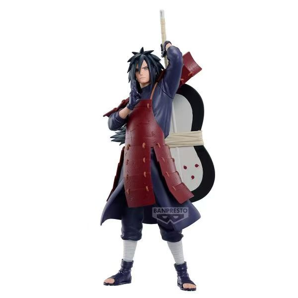

歡迎來到我的個人介紹頁面
我是人智一丙的學生，喜歡接觸新事物，也對科技領域充滿興趣。
| 姓名 | 陳柏康 |
|---|---|
| 學校 | 銘傳大學 |
| 科系 | 人工智能應用學系 |
| 年級 | 大一 |
平時喜歡收藏模型,玩電腦游戲,也喜歡運動,比如,打籃球和健身。

閒暇時喜歡聽音樂放鬆，以下是我很喜歡的幾首歌，點擊就可以到 YouTube 收聽：
希望能夠提升自己的程式設計能力，學習人工智慧相關技術，為未來的工作做好準備。
歡迎一起交流模型、遊戲、運動或程式相關的話題！可以掃描下方 QR Code 加我 LINE 好友。
使用 LINE 掃描 QR Code 加入好友